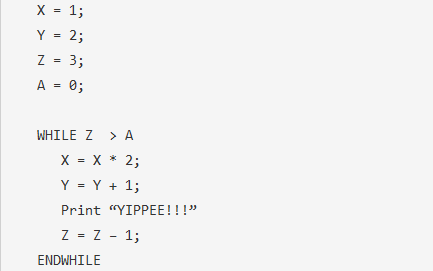

| Line Number | Var J | Var D | Var N | System Impact |
|---|---|---|---|---|
| 1 (Note 1) | ? | ? | ? | Print "I LOVE COMPUTER SCIENCE LOTS" |
| 2 (Note 2) | 4 | ? | ? | - |
| 3 (Note 3) | 4 | 3 | ? | - |
| 4 (Note 4) | 4 | 3 | ? | (J>=3)&&(D<4) is (4>=3)&&(3<4) true, go to line 5 instead of 10 |
| 5 (Note 5) | 4 | 3 | 1 | set N=1, (N<=3) is (1<=3) true, go to line 6 instead of 7 |
| 6 (Note 6) | 4 | 3 | 1 | Print "And Lots!" |
| 7 (Note 7) | 4 | 3 | 1 | For block end, go back to line 5 |
| 5 (Note 8) | 4 | 3 | 2 | set N=2, (N<=3) is (2<=3) true, go to line 6 instead of 7 |
| 6 (Note 9) | 4 | 3 | 2 | Print "And Lots!" |
| 7 (Note 10) | 4 | 3 | 2 | For block end, go back to line 5 |
| 5 (Note 11) | 4 | 3 | 3 | set N=3, (N<=3) is (3<=3) true, go to line 6 instead of 7 |
| 6 (Note 12) | 4 | 3 | 3 | Print "And Lots" |
| 7 (Note 13) | 4 | 3 | 3 | For block end, go back to line 5 |
| 7 (Note 13) | 4 | 3 | 3 | set N=4, (N<=3) is (4<=3) false, go to line 7 |
| 7 (Note 15) | 4 | 3 | 4 | For block end, go on |
| 8 (Note 16) | 3 | 3 | - | |
| 9 (Note 17) | 3 | 4 | - | |
| 10 (Note 17) | 3 | 4 | - | While block end, go back to like 4 |
| 4 (Note 18) | 3 | 4 | - | (J>=3)&&(D<4) is (3>=3)&&(4<4) false, go to line 10 |
| 10 (Note 19) | 3 | 4 | - | We're done! |